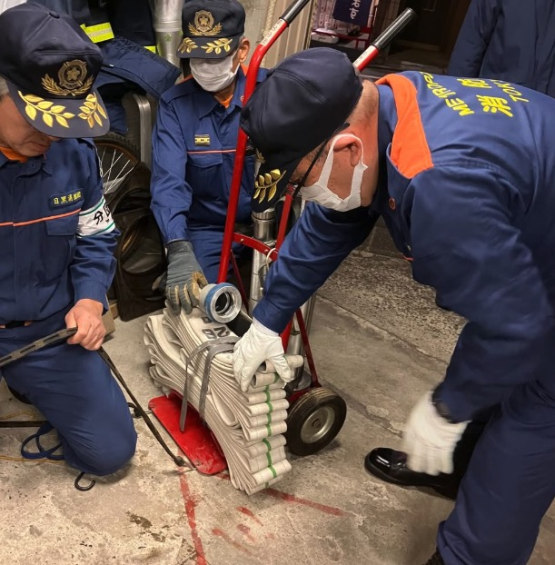

入団のメリット
消防団活動で得られるもの


防災知識の習得
災害対応スキルが身につき、日常生活でも役立つ知識を得られます。
資格取得支援
費用は消防団負担。応急手当指導員、危険物取扱者など多数の資格取得が可能。
仲間との絆
様々な職業・年齢の仲間と出会い、強い信頼関係を築けます。
報酬制度
訓練・活動に応じた費用弁償（4,500円〜）と年額報酬が支給されます。
高い資格保有率と継続的な訓練に裏打ちされた実力
約70%
団員の約7割が応急手当指導員の資格を保持。地域住民への指導も行っています。
約50%
防火・防災知識や輸送能力、救助技能など、消防活動に関連する専門技能を持つ団員が多数在籍。
11連覇
平成24年度から令和7年度まで連続優勝（令和2〜4年度はコロナ禍で大会中止）。日々の訓練の成果です。
月1〜2回
継続的な訓練で技術力と指導力を向上。初心者も安心の手厚いサポート。
消防団活動で得られるもの
災害対応スキルが身につき、日常生活でも役立つ知識を得られます。
費用は消防団負担。応急手当指導員、危険物取扱者など多数の資格取得が可能。
様々な職業・年齢の仲間と出会い、強い信頼関係を築けます。
訓練・活動に応じた費用弁償（4,500円〜）と年額報酬が支給されます。
地域を守る、多彩な活動
消防団活動は、本業を持ちながら続けられるのが特徴です。基本的な活動頻度は月1〜2回程度。仕事や家庭との両立が可能です。
実際に活動する団員のリアルな声をお届けします
第８分団には、会社員、自営業、学生など、様々な職業・年齢の団員が在籍しています。それぞれの想いを持って、地域のために活動しています。
基礎から段階的に学べる充実のカリキュラム
消防ポンプの操作、ホースの延長・放水など、火災現場で必要な基本技術を習得します。

心肺蘇生法（CPR）、AEDの使用方法など、命を救うための技術を学びます。

チェーンソー、油圧式救助器具など、災害時に必要な専門資機材の取扱いを訓練します。
消火活動の基本動作を訓練。11連覇の実績を支える技術と連携力を磨きます。
あなたも今日から地域を守る一員に
管轄地域: 月光町会、向原東町会、向原西町会、目黒本町北町会、目黒本町東町会、目黒本町５丁目南町会、目黒本町５丁目西町会
入団前の不安を解消
はい、全く問題ありません。入団時に消防の知識や経験は一切必要ありません。約70%の団員が応急手当指導員の資格を保持しており、経験豊富な先輩団員が基礎から丁寧に指導します。
はい、十分に両立可能です。消防団員の多くは本業を持ちながら活動しています。基本的な活動頻度は月1〜2回程度で、主に休日や夜間に訓練が行われます。
訓練は真剣ですが、必要以上に厳しいものではありません。実際に、訓練が厳しいという理由で退団した団員は見たことも聞いたこともありません。初心者にも分かりやすく丁寧に指導する体制が整っています。
入団費用や入団時の年会費は一切かかりません。活動に必要な装備（活動服、制服、防火服、ヘルメットなど）は全て支給されます。
はい、もちろん入団できます。消防団は性別に関係なく、18歳以上の健康な方であればどなたでも入団可能です。女性用の装備も用意されています。